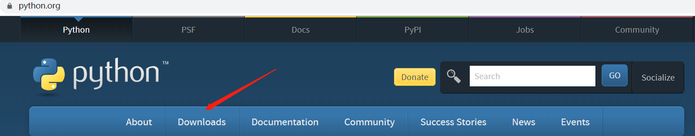

原文连接:https://www.cnblogs.com/tianming66/p/11672763.html
第一天学习笔记
一、安装typroa
下载软件typroa用于日常学习笔记记录，该软件支持markdown语法
步骤：
官网地址：https://typora.io/
选择版本安装（以windows为例）
- 选择合适的安装路径，并点击Next
- 选择是否创建桌面快捷方式，并点击Next
- 安装成功并运行
二、Markdown基本语法
1.标题的使用
想要的标题 多少个#号就代表有多少级标题，共6级
# 这是一级标题
## 这是二级标题
### 这是三级标题
#### 这是四级标题
注意#号后有一个空格
效果：
这是一级标题
这是二级标题
这是三级标题
2.列表
无序列表用一个 - 有序列表用数字加.，形如 1. 2. 3.
示例：
- 无序列表1
- 无序列表2
- 无序列表3
1. 有序列表1
2. 有序列表2
3. 有序列表3
注列表可以嵌套使用效果：
- 无序列表1
- 无序列表2
- 无序列表3
- 有序列表1
- 有序列表2
- 有序列表3
3.代码块
单行代码片段使用一个反引号`包裹 多行代码使用三个反引号```包裹
示例：
单行 print("Hello world")
多行
``` while True:
print(input().strip('吗?？')+'!')
```
效果：
print("Hello world")
while True:
print(input().strip('吗?？')+'!')4.字体格式
加粗 文字两边加两个
*号
倾斜 文字两边加一个*号
加粗加倾斜 文字两边加三个*号 删除线
文字两边加两个~~线
高亮 文字两边加两个==号
示例：
**加粗**
*倾斜*
***加粗加倾斜***
~~删除线~~效果：
加粗
倾斜
加粗加倾斜
删除线
5.超链接
文本中我们很大几率使用超链接 超链接语法格式如下：[超链接名] (超链接地址)
示例：
[百度](http://baidu.com)
[GitHub](https://github.com/)6.图片
alt就是显示在图片下面的文字，相当于对图片内容的解释。 title是图片的标题，当鼠标移到图片上时显示的内容。title可省略
支持直接拖拽
7.表格
本软件快捷键Ctrl+T
三、Python环境安装
- 在python官网下载相应的python版本，现阶段推荐3.5以上

- 自定义安装
选择路径
安装成功
配置环境变量
电脑>属性>高级系统设置>环境变量>加入你所安装的python绝对路径
安装双版本
同上安装方式安装python2版本，并把启动文件复制创建副本，命名为python2
测试

写出第一个python程序
脚本必带的文件头,且至于前两行
!/usr/bin/env
#coding:utf-8
print("Hello world")
四、PyCharm安装
下载pycharm,官网地址：http://www.jetbrains.com/pycharm/download/#section=windows
安装
点击next进入下一步
选择安装目录
选择配置，这里为64位
- 安装成功
点击Finish
- 安装完成后打开pycharm，
选择Do not import settings，之后选择OK，进入下一步。
- 填入所需的激化码进行激活（可以通过网络查找pycharm相应版本的激活码）
- 创建新项目
- 选择创建位置
- 进入的界面如下图所示，鼠标右击图中箭头指向的地方，然后选择New，最后选择python file，在弹出的框中填写文件名（任意填写）
- 写入第一个python程序并运行
至此安装完成